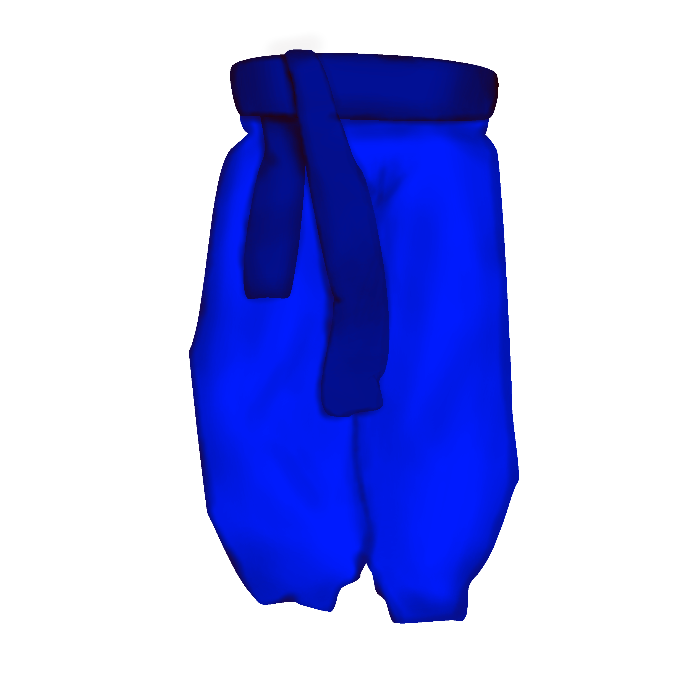

Київ
У Києві найпоширенішими були чисто сині шаровари. Пояс, переважно, також був синім, тому що це вважалося модним.
Такі шаравари були менш поширеними за межами Києва, адже зазвичай однотонний одяг не дуже користувався попитом. Натомість, у Києві це був знак заможності. Тобто носіння таких шаровар було знаком заможності та викликало повагу від інших, а отже і носили їх переважно паничі.